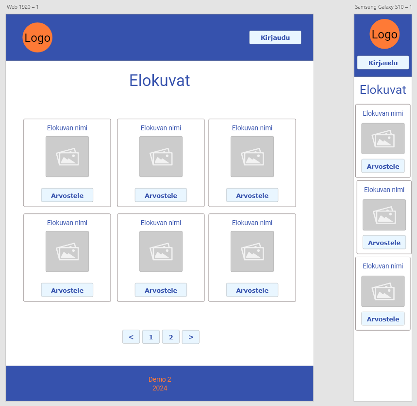

Demo 2, Adobe XD

- Tallenna työ itsellesi paikallisesti, valitse sijainniksi GitHub-reposi. Nimeä esim. demo2.xd.
- Lisää arboard desktop-näkymälle ja mobiiliversiolle (Samsung Galaxy)
- Näytä layout grid (View / Show Layout Grid)
- Lisää käytettävät värit
- Lisää ensimmäiset tarvitsemasi objektit. Yleensä pääset pitkälle suorakulmioilla ja teksteillä.
- Oikeassa yläkulmasta löytyvät tasaustoiminnot ovat usein avuksi. Voit liikuttaa näkymää painamalla hiiren rulla-painikkeen pohjaan ja liikuttamalla hiirtä.
- Kun tietyt objektit kuuluvat yhteen käytä Group (ja Ungrup) toimintoja yhdistääksesi ne kokonaisuudeksi.
- Tallenna itsellesi sopiva placeholder-kuva, voit raahata sen objektille resurssinhallinnasta.
Rautalankamallista seuraava askel on laatia yksinkertainen html/css-prototyyppi sivustosta. Tässä vaiheessa saadaan jo mm css-määrittelyt tehtyä melko pitkälle.